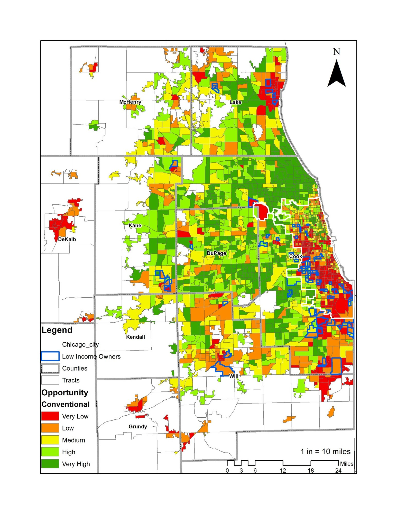

Related publications
Examining Spatial Opportunity for Local Action: From Theory to Practice
Housing + spatial justice
Research on how opportunity metrics, racialized spatial patterns, and intermediary organizations shape support systems for low-income and minority homeowners.

This work examines the limitations of conventional opportunity mapping and the role of community-based infrastructure, including HUD-certified housing agencies, anchor organizations, and faith-based institutions.
The project situates low-income and minority homeownership within spatial networks of support, rather than treating opportunity only as a neighborhood attribute.
Selected figures from spatial analysis of opportunity, race, and intermediary networks in the Chicago region.


Examining Spatial Opportunity for Local Action: From Theory to Practice